Descifrando la Salud a través de los Datos
Lección Inaugural — Maestría en Ciencia de Datos en Salud
Universidad de San Carlos de Guatemala
Invalid Date
Bienvenidos a un momento histórico.
Esta no es la apertura de un posgrado más.
Es el inicio de algo que no existía en Guatemala hace un año.
Una pregunta para arrancar
¿Cuántos de ustedes alguna vez tomaron una decisión clínica, de política pública, o de gestión… y desearon tener más datos?
¿Y cuántos tenían los datos pero no sabían qué hacer con ellos?
Esa brecha es exactamente la que esta maestría existe para cerrar.
Guatemala: nuestra realidad en datos
El problema que enfrentamos:
- 🏥 ~0.3 médicos por cada 1,000 habitantes (OMS recomienda 1)
- 🍬 12% de adultos con diabetes, muchos sin diagnóstico
- 🦟 +60,000 casos de dengue en el brote de 2023
- 👶 108 muertes maternas por cada 100,000 nacidos vivos
- 🌽 46% de niños menores de 5 años con desnutrición crónica
Lo que hay disponible:
- Décadas de datos del MSPAS
- Registros hospitalarios del IGSS
- Datos de laboratorio, vacunación, epidemiología
- Registros de programas de salud comunitaria
El problema: casi nadie está formado para convertir esos datos en decisiones.
La historia de la Señora María
María tiene 52 años, vive en Chimaltenango, y lleva tres años con diabetes tipo 2. Su médico la controla bien en cada consulta. Sus exámenes son razonables. Todo parece en orden.
Lo que nadie sabe: en ese departamento, el 38% de los pacientes diabéticos como María abandonan el control antes del cuarto mes. El patrón se repite en cada clínica. Siempre en pacientes que viven a más de 40 minutos del centro.
Nadie lo ha analizado. Los datos existen. Están en los registros. Pero duermen.
Ciencia de datos en salud es despertar esos datos.
Lo que vamos a recorrer hoy
| Sección | Tema | Tiempo |
|---|---|---|
| I | Por qué la ciencia de datos importa en salud | ~10 min |
| II | Los cuatro niveles: de lo cotidiano a la frontera | ~20 min |
| III | Inteligencia artificial y el futuro del campo | ~15 min |
| IV | Su viaje: la maestría, las herramientas, quiénes van a ser | ~10 min |
| — | Cierre y preguntas | ~5 min |
Parte I
Por qué la ciencia de datos importa en salud
Ustedes ya hacen ciencia de datos
Lo que hacen como profesionales de salud:
- Reúnen información sobre un paciente
- Identifican patrones clínicos
- Formulan hipótesis (diagnóstico diferencial)
- Evalúan evidencia (labs, imágenes, historial)
- Toman una decisión y la ajustan con el tiempo
Lo que hace un científico de datos:
- Reúne datos de múltiples fuentes
- Identifica patrones en grandes conjuntos
- Formula hipótesis (modelos predictivos)
- Evalúa evidencia (estadística, validación)
- Toma decisiones y las refina iterativamente
La diferencia no es el proceso — es la escala.
Ustedes lo hacen para 1 paciente.
La ciencia de datos lo hace para 100,000.
La diferencia es la escala
De los datos a las decisiones
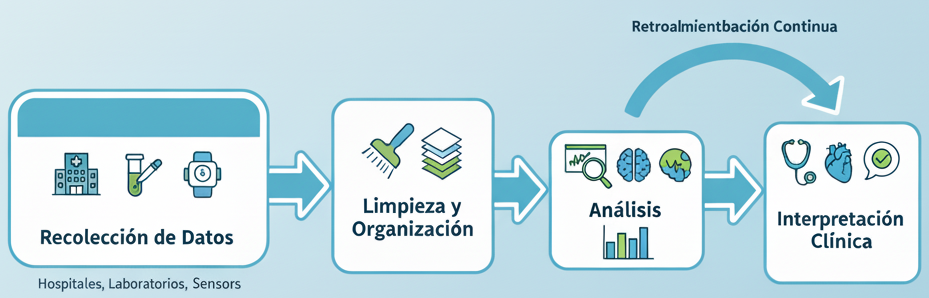
Parte II
Los cuatro niveles de la ciencia de datos en salud
Un campo con cuatro pisos
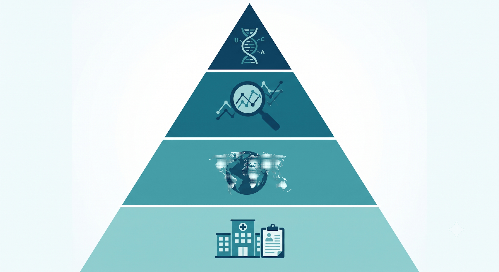
Nivel 1: La sala de consulta
Ciencia de datos en la práctica clínica
- Análisis de registros hospitalarios
- Identificación de patrones: tratamientos, medicamentos, reingresos
- Mejora en la gestión y atención
Volvamos a María:
Un analista revisa 5 años de datos del centro de salud de Chimaltenango.
Descubre: el 38% de los pacientes diabéticos abandona el control antes del cuarto mes.
Patrón: viven a más de 40 minutos del centro. Todos en zona rural.
→ La solución no es clínica: es de acceso. Los datos lo revelaron.
Nivel 1: Visualización
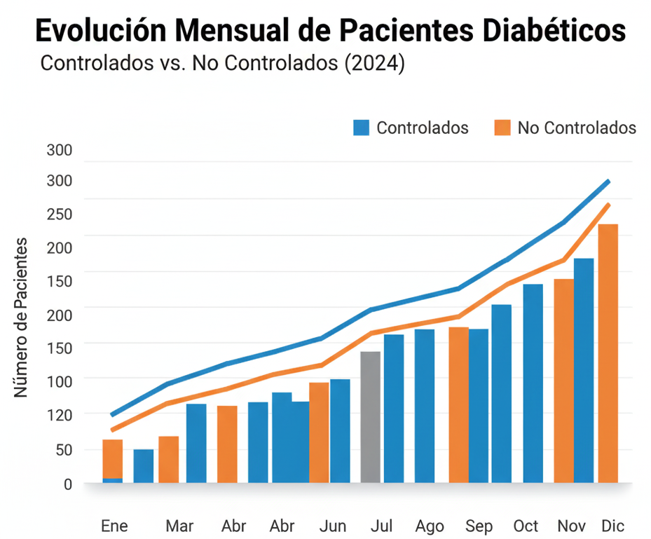
“A veces, una sola visualización revela el patrón que cambia la intervención.”
Nivel 2: El país como paciente
Salud pública y epidemiología digital
- Datos poblacionales → decisiones de política
- Vigilancia epidemiológica, predicción de brotes
- Optimización de recursos a escala nacional
El caso del dengue en Guatemala:
El brote de 2023 no llegó de sorpresa para los datos — la temperatura, las lluvias y los vectores habían dado señales semanas antes.
Un sistema de alerta temprana entrenado en esos datos podría haber activado fumigación preventiva con 3-4 semanas de anticipación.
→ Menos casos. Menos muertes. Mismo presupuesto.
Nivel 2: Vigilancia epidemiológica

Lo que un dashboard permite preguntar:
- ¿Dónde están los focos activos? · ¿Cuál es la tendencia semanal? · ¿Qué población está más expuesta?
Nivel 3: La evidencia que cambia protocolos
Ciencia de datos en investigación clínica
- Evaluación de tratamientos y pronósticos
- Análisis de supervivencia, modelos de riesgo
- Datos del mundo real (real-world evidence)
Ejemplo:
¿El protocolo de manejo de preeclampsia que usamos en el IGSS es el más efectivo?
Con datos de 10 años de historias clínicas y curvas de supervivencia materna, se puede comparar protocolos sin necesitar un ensayo clínico nuevo.
→ Investigación con los datos que ya tenemos.
Nivel 3: Curvas de supervivencia
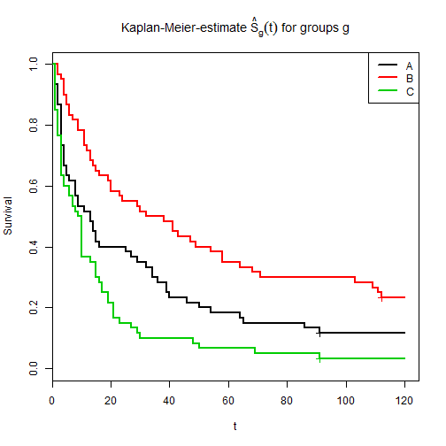
“Los datos clínicos permiten evaluar si un tratamiento realmente cambia la historia natural de la enfermedad.”
Nivel 4: Cuando los genes hablan
Bioinformática clínica
- Análisis de datos genómicos y moleculares
- Identificación de mutaciones y biomarcadores
- Medicina de precisión: el tratamiento correcto, para el paciente correcto
En Guatemala:
Nuestra población tiene una genética única — mezcla de herencias mayas, españolas y africanas.
Los modelos de riesgo entrenados en poblaciones europeas no siempre funcionan aquí.
Necesitamos datos genómicos propios. Necesitamos bioinformáticos que los analicen.
Nivel 4: Medicina de precisión
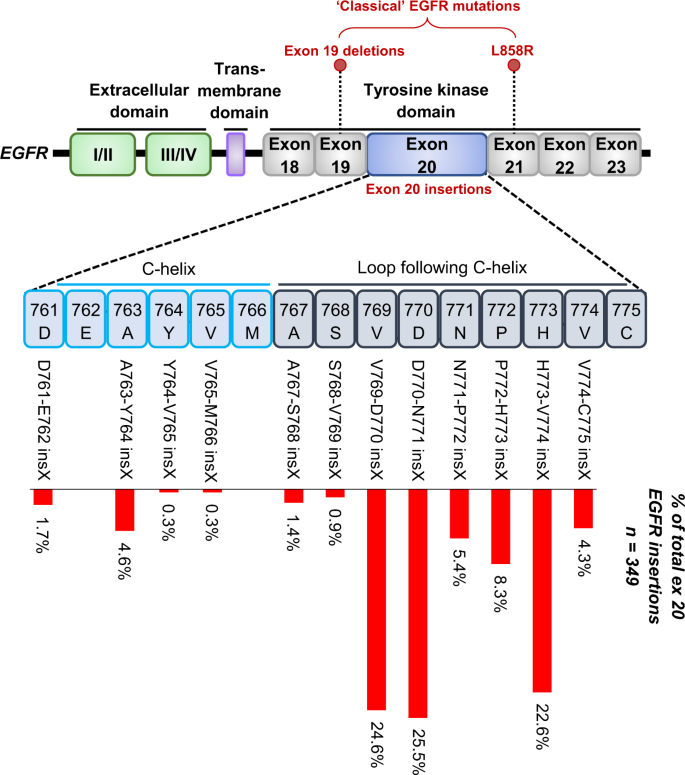
Una nota sobre ética
Los datos de salud son de las personas — no del sistema.
- Privacidad: Consentimiento informado, anonimización, acceso controlado
- Equidad: Los modelos pueden reproducir sesgos existentes — o corregirlos
- Interpretación: Un dato nunca habla solo; necesita contexto clínico
- Responsabilidad: Quien analiza los datos comparte la responsabilidad del impacto
La ciencia de datos sin ética es solo vigilancia.
Recapitulación: los cuatro niveles
| Nivel | Aplicación | Ejemplo Guatemala |
|---|---|---|
| 1 | Clínica | Abandono de control en pacientes diabéticos |
| 2 | Salud pública | Alerta temprana de dengue |
| 3 | Investigación | Comparar protocolos de preeclampsia |
| 4 | Bioinformática | Modelos de riesgo para población guatemalteca |
Parte III
Inteligencia artificial y el futuro del campo
¿Existe un Nivel 5?
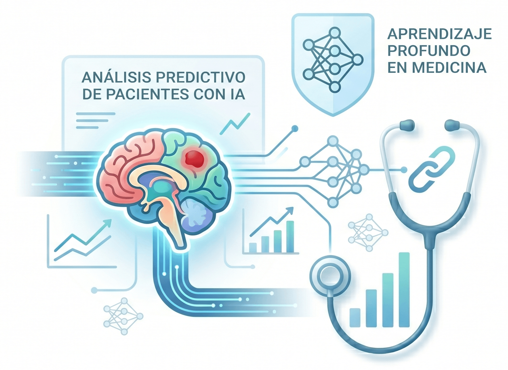
El mapa de la inteligencia artificial
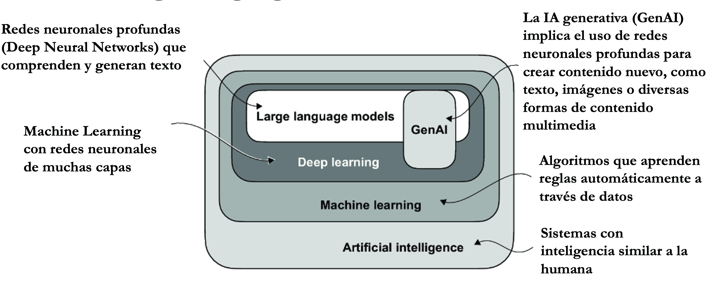
¿Qué es una red neuronal?
Piénsalo como un sistema de toma de decisiones inspirado en el cerebro:
- Entradas: Datos crudos (ej., valores de píxeles de una radiografía)
- Capas ocultas: Cada capa aprende a detectar patrones más complejos
- Salida: Una predicción (“esta radiografía muestra signos de neumonía”)
La red aprende por ejemplo — le mostramos miles de imágenes ya etiquetadas, y ella descubre qué patrones corresponden a cada diagnóstico.

IA leyendo radiografías
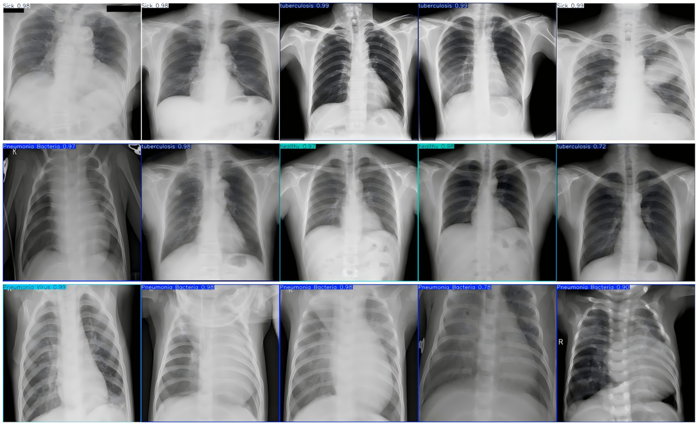
IA leyendo radiografías
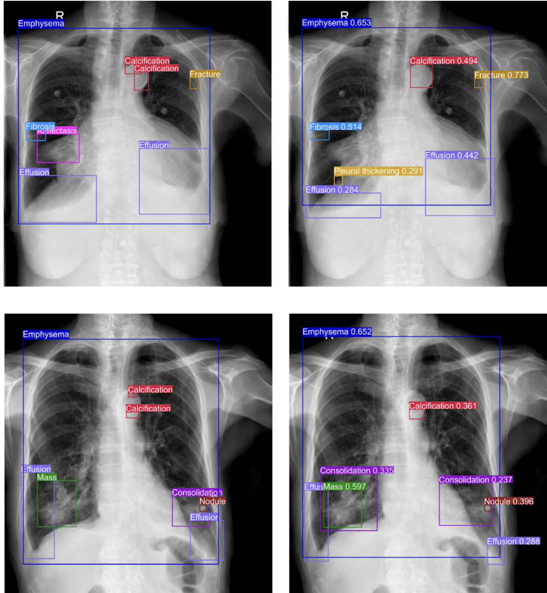
Las LLMs predicen la siguiente palabra
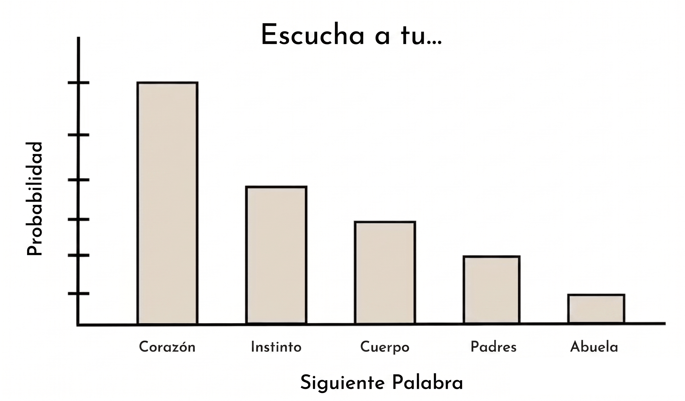
Tokenizar el lenguaje
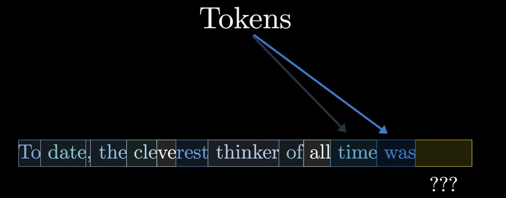
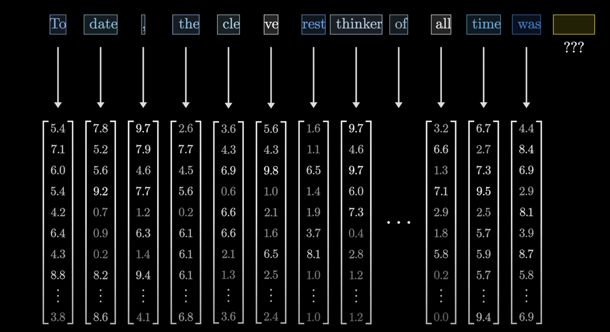
Los modelos no leen palabras — leen números.
Cada token (fragmento de palabra) se convierte en un vector matemático (embedding).
Las palabras similares están cerca
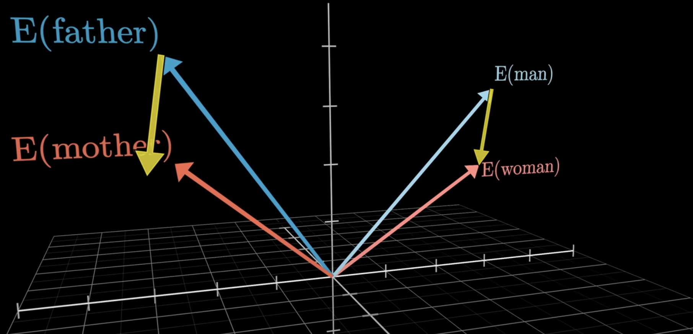
“Diabetes” y “glucosa” terminan cercanas en ese espacio.
“Cáncer” y “tumor” también.
El modelo aprende relaciones médicas sin que nadie se las enseñe explícitamente.
Los chatbots que ya conocen
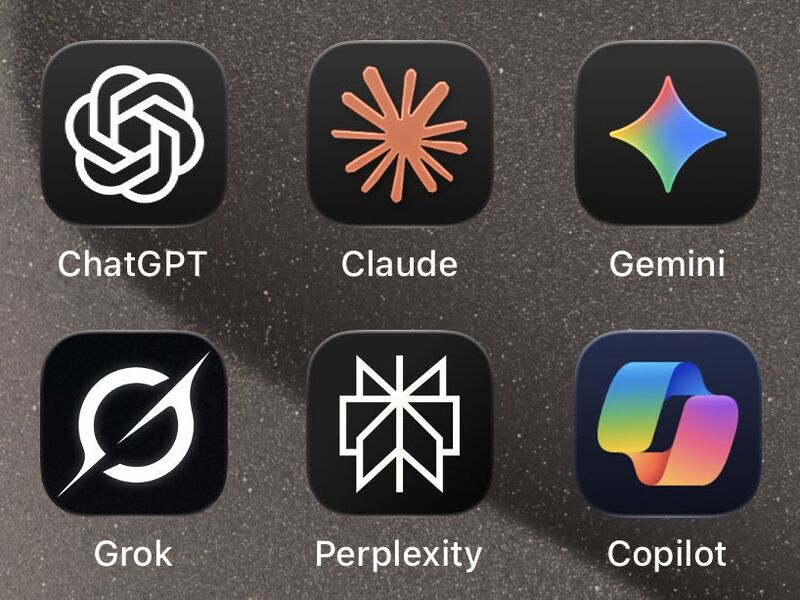
Una pregunta que cambió el campo
Si un modelo puede aprender el “lenguaje” de las palabras…
¿puede aprender el “lenguaje” completo de un paciente?
APOLLO — Representación virtual de un paciente
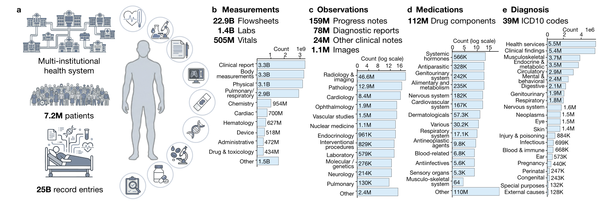
La idea central: usar la misma arquitectura de los LLMs — pero en vez de aprender el lenguaje humano, aprender el “lenguaje” completo del historial clínico de un paciente: notas, laboratorios, imágenes, signos vitales, todo junto, a lo largo del tiempo.
APOLLO — El embedding de un paciente
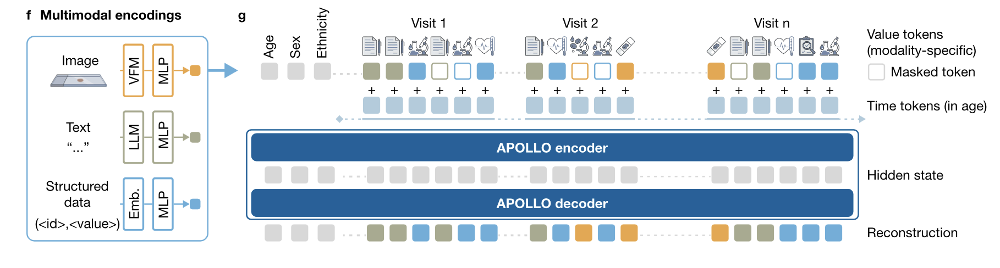
Así como “diabetes” tiene un punto en el espacio de los embeddings…
un paciente completo puede tener un punto en un espacio médico de alta dimensión.
APOLLO — Encontrar pacientes similares
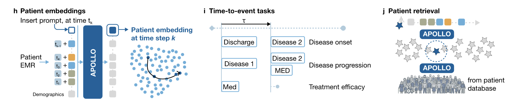
¿Para qué sirve en la práctica?
- Buscar en millones de historias clínicas el caso más parecido al tuyo
- Anticipar evoluciones basándose en casos similares pasados
- Apoyar decisiones con evidencia real de la propia institución
APOLLO — El espacio de los pacientes
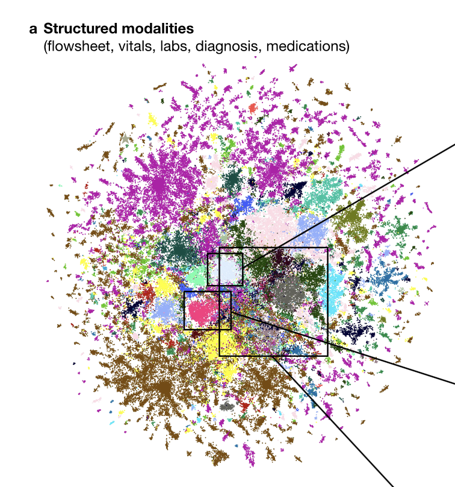
APOLLO — Predicciones clínicas
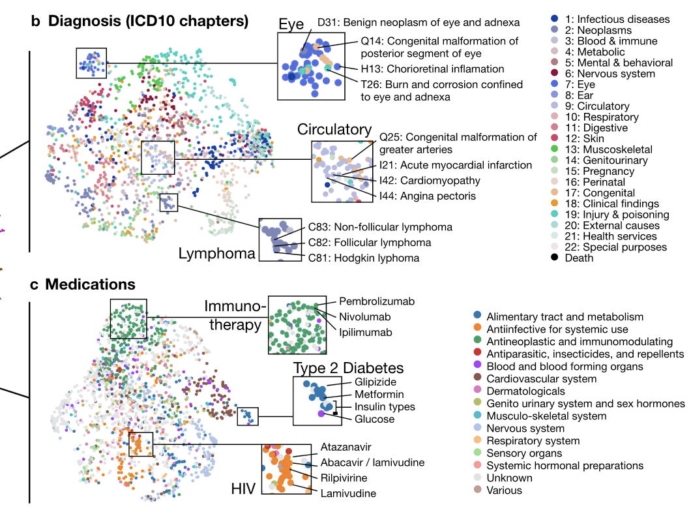
APOLLO — Notas clínicas integradas
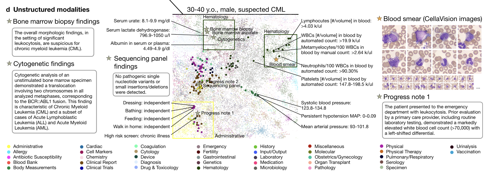
¿Qué significa todo esto para Guatemala?
Lo que la IA puede hacer:
- Leer imágenes médicas con alta precisión
- Procesar texto clínico en español e idiomas mayas
- Encontrar patrones en millones de registros
- Anticipar riesgos individuales y poblacionales
Lo que la IA NO puede hacer sola:
- Saber qué pregunta clínica vale la pena hacer
- Interpretar resultados con criterio médico y cultural
- Adaptar un modelo entrenado en EEUU a nuestra población
- Tomar decisiones éticas sobre uso de datos
Eso lo hacen ustedes.
Parte IV
Su viaje: la maestría y quiénes van a ser
Lo que van a aprender
Fundamentos
- Estadística aplicada a salud
- Bases de datos clínicos
- Epidemiología cuantitativa
- Ética y gobernanza de datos
Herramientas
- R y Python para análisis de datos
- SQL para bases de datos clínicas
- Visualización (ggplot2, Tableau, Shiny)
- Machine learning aplicado a salud
Aplicaciones
- Vigilancia epidemiológica digital
- Modelos de predicción clínica
- Análisis de supervivencia
- Introducción a bioinformática
No necesitan saber programar hoy.
Necesitan estar dispuestos a aprender.
Quiénes van a ser
El perfil único que tienen
Un programador puro no sabe qué pregunta clínica importa.
Un clínico puro no puede analizar 100,000 registros.
Ustedes son el puente.
Entienden al paciente y aprenderán a hablarle a los datos.
Esa combinación es la más escasa y la más valiosa del campo.
Una comunidad que empieza hoy
Los errores y aprendizajes de esta primera cohorte van a definir el camino para las que vienen.
No están solos en esto.
Lo que les pido para este camino
Traigan su curiosidad clínica — es su ventaja, no su limitación.
No teman al código ni a la estadística — son herramientas. Se aprenden con práctica, con paciencia y con buenos profesores.
Pregúntense siempre: ¿este análisis ayuda de verdad al paciente? ¿Al sistema? ¿A las comunidades más vulnerables?
Tengan paciencia con el proceso — un semestre los va a desafiar. Dos semestres los van a transformar.
Conclusiones
Los datos de salud existen en Guatemala — lo que falta es la gente formada para usarlos.
La ciencia de datos en salud no reemplaza al profesional clínico: lo amplifica.
Los cuatro niveles van de lo cotidiano a la bioinformática — todos necesarios, todos complementarios.
La IA (modelos de visión, LLMs, representaciones de paciente como APOLLO) ya es parte del horizonte real del campo.
Esta maestría existe para que Guatemala no espere a que el futuro llegue de afuera.
“En cinco años, cuando alguien pregunte quién empezó la ciencia de datos en salud en Guatemala, la respuesta van a ser ustedes.”
¡Bienvenidos, primera generación!
📧 oliver.mazariegos98@gmail.com · 💬 linkedin.com/in/oliver-mazariegos
Maestría en Ciencia de Datos en Salud — USAC · Primera Generación 2026